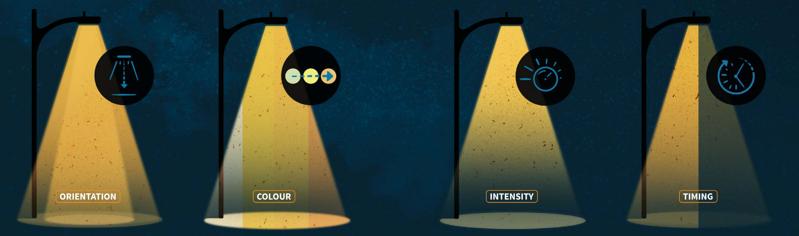
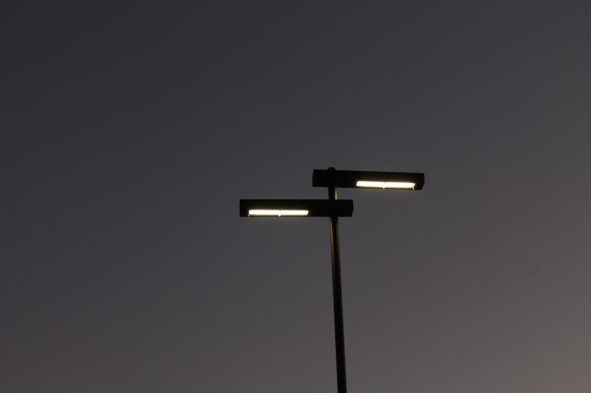
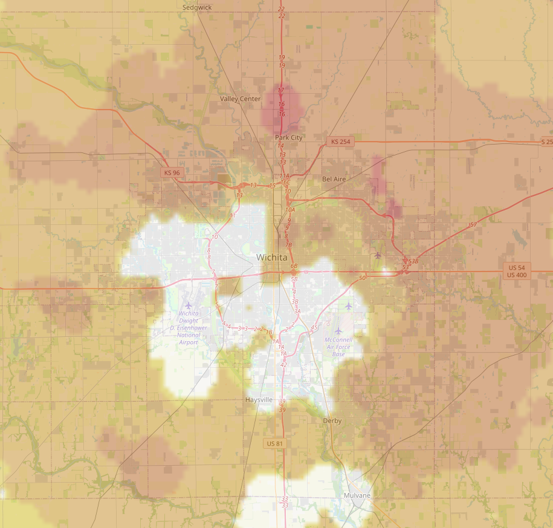

Solutions to Light Pollution
As light pollution is simply the result of artificial light being wasted into the night sky, the strategies that should be implemented to reduce the amount of light pollution are quite straightforward. DarkSky International lists several strategies to reduce wasted light that contributes to light pollution.

-
Outdoor lighting should be installed only where it will be needed and used ("Principles"). Light that goes unused simply ends up reflected into the sky and wasted.
-
Outdoor light fixtures should be fully shielded to direct light only where it is necessary and will be useful ("Principles"). Unshielded light fixtures emit light in directions where it is not needed, resulting in glare and skyglow.
-
Light fixtures should emit only the minimum amount of light necessary to accomplish their task ("Principles"). Operation of lights that are brighter than necessary will result in more light reflected into the sky, increasing light pollution.
-
Outdoor lighting should be powered off when not in use, through the use of timers and/or motion sensors ("Principles"). As previously mentioned, unused light ends up wasted into the sky.
-
Because warmer colored light is not as strongly scattered by the atmosphere as cooler colored light is, warmer colored lamps should be used in outdoor light fixtures ("Principles").

Implementation in Wichita#
The City of Wichita has been growing, and is expected to continue growing. As previously mentioned, the City of Wichita estimates the population of the Wichita Metropolitan Statistical Area to be in excess of 790,000, and expects it to grow to over 870,000 by 2035 ("Demographics"). This is illustrated in Figure 3, which shows a map of the Wichita area with light pollution data overlaid. Larger increases in light pollution between 2013 and 2024 are indicated by warmer colors, which cover much of the outskirts of Wichita. This is reflective of an expanding population.

The City of Wichita should invest in implementing the strategies outlined above, to reduce light pollution, and to benefit both local and surrounding communities, as well as the environment. Such investment will also yield returns in long-term energy savings. DarkSky International reports that the city of Tucson, Arizona, which has implemented these strategies, has seen annual energy savings of millions of dollars ("Nights over Tucson").
Common Misconception#
Some may argue that bright outdoor lighting is necessary to ensure a safe environment for people at night. However, as DarkSky International points out, bright, unshielded outdoor lighting causes glare, reducing one’s night vision, and obscuring areas in shadow. A survey conducted in Melbourne revealed that many women identified brightly-lit areas as less safe. Additionally, studies have shown that less lighting results in a safer environment. For example, a study was performed in England and Wales, where the streetlights were dimmed and powered off completely, yet no increase in traffic accidents or criminal activity was recorded. Another study was conducted in Chicago, where a 21% increase in criminal activity in the experimental area was recorded following installation of brighter light fixtures ("Reduce Crime").
Conclusion#
At first thought, light pollution may seem to be an issue only for the astronomy community. However, the actual effects it has on people and the environment, and the waste of money associated with it, should not be ignored. By taking action in implementing strategies to reduce light pollution, the City of Wichita will not only save energy costs in the long term, but will also lead the way in improving the health of the community and the environment, and in making the night sky more accessible to the people of the Wichita area.